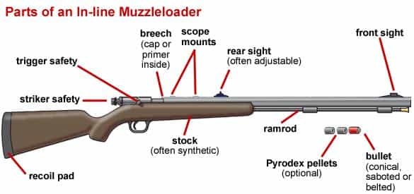

This account syndicates news from other media outlets.


With Gary Ramey’s fledgling gun-making business taking off in retail stores, he decided to start offering one of his handguns for sale on his website.
That didn’t sit well with the company he used to process payments, and they informed him they were dropping his account. Another credit card processing firm told him the same thing: They wouldn’t do business with him.
The reason? His business of making firearms violates their policies.
In the wake of high-profile mass shootings, corporate America has been taking a stand against the firearms industry amid a lack of action by lawmakers on gun control. Payment processing firms are limiting transactions, Bank of America stopped providing financing to companies that make AR-style guns, and retailers like Walmart and Dick’s Sporting Goods imposed age restrictions on gun purchases.
The moves are lauded by gun-safety advocates but criticized by the gun industry that views them as a backhanded way of undermining the Second Amendment. Gun industry leaders see the backlash as a real threat to their industry and are coming to the conclusion that they need additional protections in Congress to prevent financial retaliation from banks.
“If a few banks say ‘No, we’re not going to give loans to gun dealers or gun manufacturers’, all of a sudden the industry is threatened and the Second Amendment doesn’t mean much if there are no guns around,” said Michael Hammond, legal counsel for Gun Owners of America. “If you can’t make guns, if you can’t sell guns, the Second Amendment doesn’t mean much.”
The issue has already gotten the attention of the Republican who is chairman of the Senate Banking Committee. Sen. Mike Crapo of Idaho sent letters criticizing Bank of America and Citigroup, which decided to restrict sales of firearms by its business customers, over their new gun rules in the wake of the Florida high school shooting in February.
“We should all be concerned if banks like yours seek to replace legislators and policy makers and attempt to manage social policy by limiting access to credit,” Crapo wrote to Citigroup’s chief executive.
Honor Defense is a small operation with a handful of employees that include Ramey’s son and his wife who work out of a non-descript building in a Georgia office park north of Atlanta. In 2016, its first year, it sold 7,500 firearms. Its products — handcrafted 9mm handguns that come in a variety of colors — can now be found in more than 1,000 stores.
When Ramey noticed that neither Stripe nor Intuit would process payments through his site, he submitted a complaint with Georgia’s attorney general’s office, counting on help from a state law that prohibits discrimination by financial service firms against the gun industry. But the state rejected it, saying that credit card processing is not considered a financial service under state law.
He views the credit card issue as companies “infusing politics into business.”
“We’re just a small company trying to survive here,” Ramey said. “It’s hard enough competing with Smith & Wesson, Ruger and Sig Sauer.”
The financial industry actions came amid a broader pushback by corporate America in the aftermath of the Florida shooting. Delta and United Airlines stopped offering discounted fares to NRA members, as did the Hertz, Alamo and National rental car companies. First National Bank of Omaha, one of the nation’s largest privately held banks, decided not to renew a co-branded Visa credit card with the NRA.
Walmart and Dick’s Sporting Goods both decided they would no longer sell “assault weapons” or firearms to people under age 21. REI, an outdoor-gear shop that doesn’t sell firearms, joined in and decided it would stop selling such items as ski goggles, water bottles and bike helmets made by companies whose parent firm, Vista Outdoor, manufactures ammunition and AR-style long guns.
There’s been election-year response from some lawmakers, notably in Georgia where Lt. Gov. Casey Cagle, who is running for governor, led a move in the Legislature to kill a tax break on jet fuel to punish Atlanta-based Delta over its NRA actions. The move cost the airline an estimated $40 million.

Gun-control advocates have applauded the efforts, saying it demonstrates responsible leadership at a time of paralysis in government. Experts say it’s a sign that the business world views wading into the gun debate as not at all risky — and, in fact, potentially beneficial to their brand.
“Companies by and large avoid these issues like the plague and they only get involved — whether they’re credit card companies or airlines — when they feel like doing nothing is as bad as doing something and they feel completely stuck,” said Timothy D. Lytton, professor at Georgia State University’s College of Law and author of “Suing the Gun Industry: A Battle at the Crossroads of Gun Control and Mass Torts.”
The gun industry acknowledges that there’s nothing requiring companies from doing business with gun manufacturers or dealers. Monthly reports from the federal government show background checks to purchase a firearm are up over last year so far, so the early actions apparently have not put a dent in sales.
Still, the industry believes it needs stronger laws against financial retaliation in the future.
Don’t Miss: American Corporations Only Support Gay Marriage When They Can Profit From It